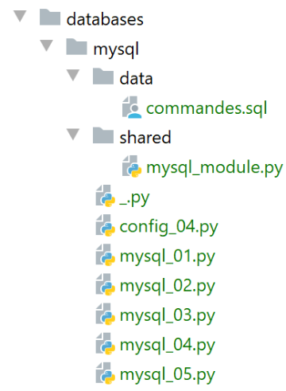
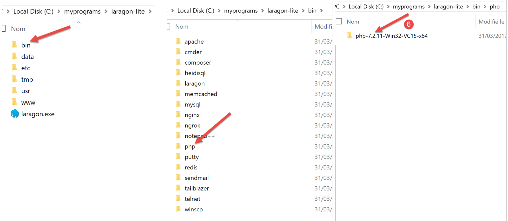
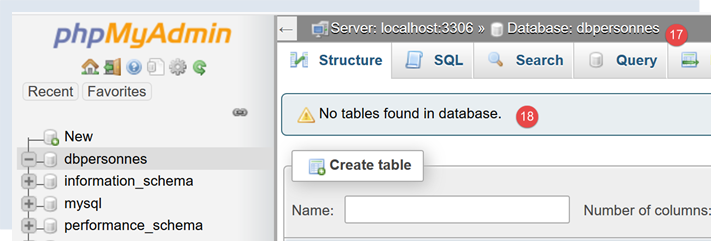
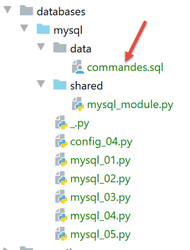
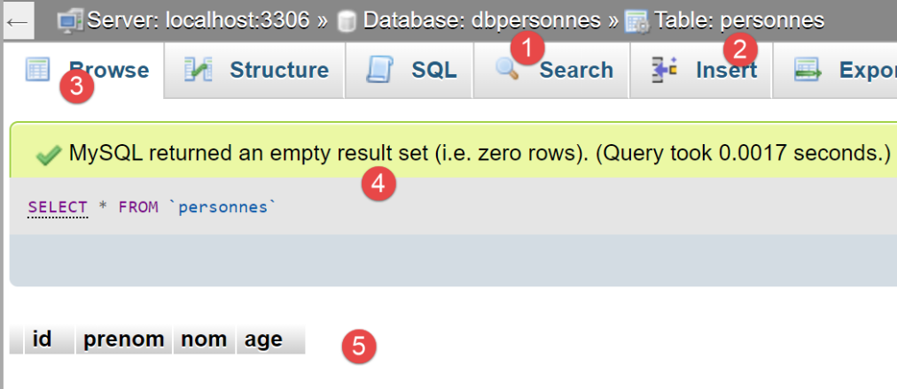

16. 使用 MySQL 数据库管理系统

16.1. 安装 MySQL 数据库管理系统
为了使用 MySQL 数据库管理系统，我们将安装 Laragon 软件。
16.1.1. 安装 Laragon
Laragon 是一个集成了多个软件组件的软件包：
- Apache Web 服务器。我们将使用它来编写 Python Web 脚本；
- MySQL 数据库管理系统；
- PHP 脚本语言，我们不会使用它；
- 一个为 Web 应用程序提供缓存功能的 Redis 服务器。我们不会使用它；
Laragon 可于以下地址下载（2020年2月）：


- 安装 [1-5] 后，将生成以下目录结构：

- 在 [6] 中是 PHP 安装文件夹（本文中未使用）；
启动 [Laragon] 后将显示以下窗口：

- [1]：Laragon 主菜单；
- [2]：[Start All] 按钮用于启动 Apache Web 服务器和 MySQL 数据库；
- [3]：[WEB] 按钮将显示网页 [http://localhost]；
- [4]：[Database] 按钮允许您使用 [phpMyAdmin] 工具管理 MySQL 数据库管理系统。您必须事先安装此工具；
- [5]：[终端] 按钮打开命令行终端；
- [6]：[根目录] 按钮将打开一个定位于 [<laragon>/www] 文件夹的 Windows 资源管理器窗口，该文件夹是 [http://localhost] 网站的根目录。您应将由 Laragon 的 Apache 服务器管理的静态 Web 应用程序放置在此处；
16.1.2. 创建数据库
接下来我们将向您演示如何使用 Laragon 工具创建数据库和 MySQL 用户。

- 启动后，可通过菜单 [2] 管理 Laragon [1]；
- 在 [3-5] 中，若尚未安装，请安装 MySQL 管理工具 [phpMyAdmin]；

- 在 [6] 处，启动 Apache Web 服务器和 MySQL 数据库管理系统；
- 在 [7]，Apache 服务器已启动；
- 在 [8]，MySQL 数据库管理系统已启动；

- 在 [8-10] 中，创建一个名为 [dbpersonnes] 的数据库 [11]。我们将构建一个人员数据库；

- 在[11]中，我们将管理刚刚创建的数据库；

- [数据库] 操作会向 URL [http://localhost/phpmyadmin] [12] 发送一个 Web 请求。Laragon Apache Web 服务器会做出响应。URL [http://localhost/phpmyadmin] 是我们之前安装的 [phpMyAdmin] 工具的访问地址 [5]。该工具允许您管理 MySQL 数据库；
- 默认情况下，数据库管理员的登录凭据为：root [13]，且无需密码 [14]；

- 在 [16] 中，是我们之前创建的数据库；

- 目前，我们有一个名为 [dbpersonnes] [17] 的空数据库 [18]；
我们创建一个用户 [admpersonnes]，密码为 [nobody]，该用户将拥有 [dbpersonnes] 数据库的全部权限：

- 在 [19] 中，我们定位在 [dbpersonnes] 数据库上；
- 在 [20] 中，我们选中了 [权限] 选项卡；
- 在 [21-22] 中，我们可以看到用户 [root] 对 [dbpersonnes] 数据库拥有完全权限；
- 在 [23] 中，我们创建一个新用户；

- 在 [25-26] 中，该用户的用户名为 [admdbpersonnes]；
- 在 [27-29] 中，其密码将设置为 [nobody]；
- 在 [30] 中，phpMyAdmin 提示该密码强度极低（易被破解）。在生产环境中，建议使用 [31] 生成强密码；
- 在 [32] 中，我们指定用户 [admdbpersonnes] 必须对 [dbpersonnes] 数据库拥有完全权限；
- 在 [33] 中，我们确认所提供的信息；

- 在 [35] 中，phpMyAdmin 提示用户已创建成功；
- 在[36]中，显示了在数据库上执行的SQL查询；
- 在 [37] 中，用户 [admpersonnes] 拥有 [dbpersonnes] 数据库的全部权限；
现在我们得到：
- 一个 MySQL 数据库 [dbpersonnes]；
- 一个用户 [admpersonnes/nobody]，该用户对该数据库拥有完全权限；
16.2. 安装 [mysql-connector-python] 包
我们将编写 Python 脚本，以使用之前创建的数据库，其架构如下：

连接器用于将 Python 代码与所使用的数据库管理系统（DBMS）进行隔离。针对不同的数据库管理系统，都有相应的连接器，且它们都遵循相同的接口。因此，当我们在上面的示例中将 MySQL 数据库管理系统替换为 PostgreSQL 数据库管理系统时，架构如下所示：

由于所有数据库管理系统连接器都遵循相同的接口，因此通常无需修改 Python 脚本。实际上，大多数数据库管理系统使用的都是专有 SQL：
- 它们符合 SQL（结构化查询语言）标准；
- 但会对其进行扩展——因为仅靠标准本身是不够的——通过专有语言扩展；
因此，在更换数据库管理系统时，通常需要对脚本中的 SQL 语句进行修改。
默认情况下，Python 不提供管理 MySQL 数据库的功能。要实现此功能，您必须下载一个包。目前有多种可选方案。在此，我们将使用 [mysql-connector-python] 包，这是 MySQL 所有者 Oracle 公司提供的官方连接器。
该包将在 Pycharm [终端] 窗口中安装：

- [2] 中的目录对后续操作无关紧要；
在终端中输入命令 [pip search MySQL]：
- [pip]（Python 包管理器）是用于安装 Python 包的工具。该 [pip] 工具会连接到包含 Python 包的仓库；
- [search MySQL]：检索名称中包含 [MySQL]（不区分大小写）的包列表；
该命令的执行结果如下：
mysql (0.0.2) - Virtual package for MySQL-python
jx-mysql (3.49.20042) - jx-mysql - JSON Expressions for MySQL
weibo-mysql (0.1) - insert mysql
bits-mysql (1.0.3) - BITS MySQL
MySQL-python (1.2.5) - Python interface to MySQL
deployfish-mysql (0.2.13) - Deployfish MySQL plugin
mtstat-mysql (0.7.3.3) - MySQL Plugins for mtstat
bottle-mysql (0.3.1) - MySQL integration for Bottle.
WintxDriver-MySQL (2.0.0-1) - MySQL support for Wintx
py-mysql (1.0) - Operating Mysql for Python.
mysql-utilities (1.4.3) - MySQL Utilities 1.4.3 (part of MySQL Workbench Distribution 6.0.0)
…. - Tool to move slices of data from one MySQL store to another
mysql-tracer (2.0.2) - A MySQL client to run queries, write execution reports and export results
mysql-utils (0.0.2) - A simple MySQL library including a set of utility APIs for Python database programming
mysql-connector-repackaged (0.3.1) - MySQL driver written in Python
dffml-source-mysql (0.0.5) - DFFML Source for MySQL Protocol
mysql-connector-python (8.0.19) - MySQL driver written in Python
INSTALLED: 8.0.19 (latest)
prometheus-mysql-exporter (0.2.0) - MySQL query Prometheus exporter
backwork-backup-mysql (0.3.0) - Backwork plug-in for MySQL backups.
django-mysql-manager (0.1.4) - django-mysql-manager is a Django based management interface for MySQL users and databases.
…. - mysql operate
C:\Data\st-2020\dev\python\cours-2020\v-01>
所有名称或描述中包含关键词 MySQL 的模块均已列出。我们将使用的是（2020年2月版）[mysql-connector-python]，位于第17行。要在终端中安装它，请输入命令 [pip install -U mysql-connector-python]：
C:\Data\st-2020\dev\python\cours-2020\v-01>pip install -U mysql-connector-python
Collecting mysql-connector-python
Using cached mysql_connector_python-8.0.19-py2.py3-none-any.whl (355 kB)
Requirement already satisfied, skipping upgrade: protobuf==3.6.1 in c:\myprograms\python38\lib\site-packages (from mysql-connector-python) (3.6.1)
Requirement already satisfied, skipping upgrade: dnspython==1.16.0 in c:\myprograms\python38\lib\site-packages (from mysql-connector-python) (1.16.0)
Requirement already satisfied, skipping upgrade: six>=1.9 in c:\users\serge\appdata\roaming\python\python38\site-packages (from protobuf==3.6.1->mysql-connector-python) (1.14.0)
Requirement already satisfied, skipping upgrade: setuptools in c:\myprograms\python38\lib\site-packages (from protobuf==3.6.1->mysql-connector-python) (41.2.0)
Installing collected packages: mysql-connector-python
Successfully installed mysql-connector-python-8.0.19
- 第 1 行：[install -U] 选项（U 表示升级）会请求与 [mysql-connector-python] 包相关的各个包的最新版本；
要查看本机 Python 环境中已安装的包，请输入命令 [pip list]：
C:\Data\st-2020\dev\python\cours-2020\v-01>pip list
Package Version
---------------------- ----------
asgiref 3.2.3
astroid 2.3.3
atomicwrites 1.3.0
attrs 19.3.0
certifi 2019.11.28
…
MarkupSafe 1.1.1
mccabe 0.6.1
more-itertools 8.1.0
mysql-connector-python 8.0.19
mysqlclient 1.4.6
packaging 20.0
pip 20.0.1
pipenv 2018.11.26
…
- 第 13 行：我们已安装 [mysql-connector-python] 包；
要了解如何使用 [mysql-connector-python] 包管理 MySQL 数据库，请访问该包的网站 |https://dev.mysql.com/doc/connector-python/en/|。下一节将展示一系列示例。
16.3. 脚本 [mysql_01]：连接到 MySQL 数据库 - 1
[mysql_01] 脚本演示了使用数据库的第一步。它将帮助我们验证能否连接到之前创建的 [dbpersonnes] 数据库。
注释
- 第 2 行：从 [mysql.connector] 模块导入某些函数和类；
- 第 6–7 行：将要连接的用户凭据；
- 第 8 行：托管数据库的机器。MySQL 连接器允许您操作远程数据库；
- 第 9 行：我们要连接的数据库名称；
- 第 11–26 行：脚本将（第 16 行）使用用户 [admpersonnes / nobody] 连接到数据库 [dbpersonnes]；
- 第 20–26 行：连接可能会失败。因此，该情况在 try/except/finally 代码块中进行处理；
- 第 16 行：[mysq.connector] 模块的 connect 方法接受多种命名参数：
- user：连接所属的用户 [admpersonnes]；
- password：用户密码 [nobody]；
- host：MySQL 数据库服务器 [localhost]；
- database：要连接的数据库。可选。
- 第 20 行：如果抛出异常，其类型为 [DatabaseError] 或 [InterfaceError]；
- 第 23–26 行：在 [finally] 子句中，关闭连接；
结果
16.4. 脚本 [mysql_02]：连接到 MySQL 数据库 - 2
在这个新脚本中，数据库连接被封装在一个函数中：
注释：
- 第 6–19 行：一个 [connection] 函数，用于尝试将用户连接到 [dbpersonnes] 数据库，然后断开连接。显示结果；
- 第 29–41 行：主程序——调用 connection 方法两次，并显示任何异常；
结果
16.5. 脚本 [mysql_03]：创建 MySQL 表
既然我们已经知道如何与 MySQL 数据库管理系统建立连接，就可以开始通过此连接执行 SQL 命令了。为此，我们将连接到已创建的数据库 [dbpersonnes]，并利用该连接在数据库中创建一个表。
注：
- 第 9 行：execute_sql 函数在已打开的连接上执行 SQL 查询；
- 第 14 行：连接上的 SQL 操作是通过一个称为游标的特殊对象来执行的；
- 第 14 行：获取游标；
- 第 16 行：执行 SQL 查询；
- 第 17–20 行：无论是否发生错误，都会关闭游标。这将释放与其关联的资源。如果发生异常，此处不会进行处理，异常将传播到调用代码；
- 第 33–43 行：建立与数据库的连接；
- 第 38 行：为连接设置 AUTOCOMMIT=True 意味着每次查询执行都在自动事务中进行。默认模式为 AUTOCOMMIT=False，此时由开发者负责管理事务。 事务是一种涵盖 1 到 n 个查询执行的机制。要么所有查询都成功，要么全部失败。因此，如果查询 1 到 i 成功，但查询 i+1 失败，则查询 1 到 i 将被“回滚”，使数据库恢复到执行查询 1 之前的状态；
- 此处有两个 SQL 查询（第 49 行和第 58 行）。每个查询都将在事务内执行。第二个查询失败不会影响第一个查询；
- 第 45–51 行：执行 SQL 语句 [drop table people]。该语句将删除名为 [people] 的表。如果该表不存在，可能会报告错误。此错误被忽略（第 51 行）；
- 第 53–55 行：创建 [people] 表的命令。表可视为一组行和列。创建命令指定了列名：
- [id]：一个整数标识符。它对每个人都是唯一的。这将作为主键（PRIMARY KEY）。这意味着在表内，该列的值绝不会重复，可用于识别个人；
- [last_name]：长度不超过 30 个字符的字符串；
- [last_name]：长度不超过 30 个字符的字符串；
- [age]：一个整数；
- 这些列各自的 [NOT NULL] 属性意味着，在表的每一行中，这三个列均不能为空；
- 参数 [unique(last_name, first_name)] 称为约束。此处的行级约束要求行中的 (last_name, first_name) 元组在表中必须唯一。这意味着我们可以根据已知的姓氏和名字，在表中唯一地识别出某个人；
- 第 56–60 行：执行 SQL 语句；
- 第 61–63 行：处理任何异常；
- 第 64–66 行：断开与数据库的连接；
结果
使用 [phpMyAdmin] 验证：

- 数据库 [dbpersonnes] [1] 包含一个表 [personnes] [2]，其结构为 [3-4]，主键为 [5]，并具有唯一性约束 [6]；
16.6. 脚本 [mysql_04]：执行 SQL 命令文件
在先前创建 [personnes] 表之后，我们现在通过 SQL 语句向其中插入数据并进行查询。
我们希望从文本文件中执行这些 SQL 语句：

文件 [commands.sql] 的内容如下：
# suppression de la table [personnes]
drop table personnes
# création de la table personnes
create table personnes (prenom varchar(30) not null, nom varchar(30) not null, age integer not null, primary key (nom,prenom))
# insertion de deux personnes
insert into personnes(prenom, nom, age) values('Paul','Langevin',48)
insert into personnes(prenom, nom, age) values ('Sylvie','Lefur',70)
# affichage de la table
select prenom, nom, age from personnes
# erreur volontaire
xx
# insertion de trois personnes
insert into personnes(prenom, nom, age) values ('Pierre','Nicazou',35)
insert into personnes(prenom, nom, age) values ('Geraldine','Colou',26)
insert into personnes(prenom, nom, age) values ('Paulette','Girond',56)
# affichage de la table
select prenom, nom, age from personnes
# liste des personnes par ordre alphabétique des noms et à nom égal par ordre alphabétique des prénoms
select nom,prenom from personnes order by nom asc, prenom desc
# liste des personnes ayant un âge dans l'intervalle [20,40] par ordre décroissant de l'âge
# puis à âge égal par ordre alphabétique des noms et à nom égal par ordre alphabétique des prénoms
select nom,prenom,age from personnes where age between 20 and 40 order by age desc, nom asc, prenom asc
# insertion de mme Bruneau
insert into personnes(prenom, nom, age) values('Josette','Bruneau',46)
# mise à jour de son âge
update personnes set age=47 where nom='Bruneau'
# liste des personnes ayant Bruneau pour nom
select nom,prenom,age from personnes where nom='Bruneau'
# suppression de Mme Bruneau
delete from personnes where nom='Bruneau'
# liste des personnes ayant Bruneau pour nom
select nom,prenom,age from personnes where nom='Bruneau'
首先，我们定义一些函数并将其放入模块中，以便重复使用：

[mysql_module] 脚本如下：
注：
- 第 29 行：[execute_file_of_commands] 函数执行名为 [sql_filename] 的文本文件中包含的 SQL 命令：
- 有关参数的含义，请参阅第 31–38 行的注释；
- 第 40–48 行：处理文本文件 [sql_filename]；
- 第 43 行：打开文件；
- 第 34 行：执行 [execute_list_of_commands] 函数，该函数会按列表顺序执行传入的 SQL 命令。此处该列表由文本文件中的所有行组成 [file.readlines()]（第 45 行）；
[execute_list_of_commands] 函数如下：
注释
- 第 2 行：[execute_list_of_commands] 函数执行 [sql_commands] 列表中包含的 SQL 命令：
- 有关参数的含义，请参阅第 4–11 行的注释；
- 第 2 行：接收到的连接是一个已打开的数据库连接；
- 第 15 行：如果希望 [sql_commands] 列表中的所有命令都在事务内执行，则必须在 AUTOCOMMIT=False 模式下工作。否则，将处于 AUTOCOMMIT=True 模式，此时 [sql_commands] 列表中的每个命令都会在自动事务内执行，且不存在全局事务；
- 第 19 行：请求一个游标来执行各种 SQL 命令；
- 第 22–51 行：依次执行这些命令；
- 第 26–27 行：我们允许在 SQL 命令列表中出现空行和注释。遇到此类情况，我们将直接忽略该命令；
- 第 30–33 行：执行当前查询；
- 第 35–45 行：处理当前查询中可能出现的运行时错误；
- 第 37–38 行：将错误添加到错误表中；
- 第 40–41 行：如果已启用日志记录，则显示错误消息；
- 第 43–45 行：如果调用代码要求在出现第一个错误后停止，或者要求使用事务，则程序必须停止。返回错误数组；
- 第 46–51 行：处理当前查询未发生执行错误的情况；
- 第 48–49 行：若请求了跟踪功能，则显示已执行的查询并标注为“成功”；
- 第 50–51 行：显示已执行查询的结果。稍后我们将回到 [display_info] 函数；
- 第 54–65 行：无论是否发生异常，[finally] 子句都会在所有情况下执行；
- 第 56–57 行：关闭游标。这将释放分配给它的资源；
- 第 59-65 行：处理调用代码要求在事务内执行 SQL 命令的情况；
- 第 60 行：检查 [errors] 列表是否为空，若为空则表示未发生异常。此时提交事务（第 65 行）；否则回滚事务（第 62 行）；
[display_info] 函数用于显示查询结果：
# ---------------------------------------------------------------------------------
def afficher_infos(curseur: MySQLCursor):
print(type(curseur))
# affiche le résultat d'une command sql
# s'agissait-il d'un select ?
if curseur.description:
# le curseur a une description - donc il a exécuté un select
# description[i] est la description de la colonne n° i du select
# description[i][0] est le nom de la colonne n° i du select
# on affiche les noms des champs
titre = ""
for i in range(len(curseur.description)):
titre += curseur.description[i][0] + ", "
# on affiche la liste des champs sans la virgule de fin
print(titre[0:len(titre) - 1])
# ligne séparatrice
print("*" * (len(titre) - 1))
# ligne courante du select
ligne = curseur.fetchone()
while ligne:
# on l'affiche
print(ligne)
# ligne suivante du select
ligne = curseur.fetchone()
# ligne séparatrice
print("*" * (len(titre) - 1))
else:
# le curseur n'a pas de champ [description] - il a donc exécuté un ordre SQL
# de mise à jour (insert, delete, update)
print(f"nombre de lignes modifiées : {curseur.rowcount}")
注释
- 第 1 行：该函数的参数是刚刚执行了 SQL 语句的光标。根据该语句是 SELECT 语句还是更新语句（INSERT、UPDATE、DELETE），光标的内容会有所不同；
- 第 6 行：如果游标包含 [description] 字段，则表示它已执行了一条 SELECT 语句，且 [description] 描述了 SELECT 语句中请求的字段：
- description[i] 描述 SELECT 语句中请求的第 i 个字段。它是一个列表；
- description[i][0] 是第 i 个字段的名称；
- 第 11–17 行：显示 SELECT 语句请求的字段名称；
- 第 18–24 行：处理 SELECT 语句的结果；
- 第 20、24 行：SELECT 的结果按顺序处理。该结果是一组行。通过 [cursor.fetchone()]（第 19 行）获取当前行，随后获得一个元组；
- 第 27–30 行：如果游标不包含 [description] 字段，则说明它执行了 INSERT、UPDATE 或 DELETE 更新语句。此时我们可以确定该语句的执行修改了表中多少行；
- 第 30 行：[cursor.rowcount] 即为该数值；
主脚本 [mysql-04] 使用了我们刚刚介绍的 [mysql_module] 模块：

[config_04] 文件用于配置 [mysql_04] 脚本的执行环境：
[mysql_04] 脚本如下：
注释
- 第 1-4 行：脚本配置；
- 第 8 行：导入上述 [mysql_module] 模块：
- 第 12-22 行：[mysql-04] 脚本期望接收一个参数，该参数必须取值为 [true / false] 之一。此参数用于指定是否应在事务内执行 SQL 命令文件（true）或不在事务内执行（false）；
- 第 14 行：用户传递给脚本的参数位于 [sys.argv] 列表中；
- 第 15 行：需要两个参数，例如 [mysql-04 true]。脚本名称也算作一个参数；
- 第 17-18 行：如果确实有两个参数，则第二个参数必须是一个字符串，其值为 'true' 或 'false'；
- 第24–29行：计算第33行显示的文本；
- 第 39–44 行：执行文件 [./data/commands.sql] 中的命令；
- 第 45–49 行：若在连接过程中（第 40 行）发生错误，或 [execute_file_of_commands] 脚本未处理该错误，则显示错误并终止进程；
- 第 55–62 行：若执行成功，则显示执行 SQL 命令时遇到的错误数量；
执行 #1
首先，我们进行一次不使用事务的执行。为此，我们将按照 |配置执行上下文| 一节中的说明创建一个执行配置：

- 在 [1-4] 中，我们创建了一个 Python 执行配置；

- [5]：执行配置的名称；
- [6]：待执行脚本的路径；
- [7]: 脚本参数；
- [8]: 执行目录；
因此，此配置相当于在事务中执行该 SQL 文件。请点击 [应用] 按钮以确认配置。
我们以相同的方式创建 [mysql mysql-04 without_transaction] 执行配置：

因此，此配置相当于在不使用事务的情况下执行该 SQL 文件。请点击 [应用] 按钮以确认配置。
我们首先运行不带事务的版本：

结果如下：
C:\Data\st-2020\dev\python\cours-2020\python3-flask-2020\venv\Scripts\python.exe C:/Data/st-2020/dev/python/cours-2020/python3-flask-2020/databases/mysql/mysql_04.py false
--------------------------------------------------------------------
Exécution du fichier SQL C:\Data\st-2020\dev\python\cours-2020\python3-flask-2020\databases\mysql/data/commandes.sql sans transaction
--------------------------------------------------------------------
[drop table personnes] : Exécution réussie
nombre de lignes modifiées : 0
[create table personnes (id int primary key, prenom varchar(30) not null, nom varchar(30) not null, age integer not null, unique (nom,prenom))] : Exécution réussie
nombre de lignes modifiées : 0
[insert into personnes(id, prenom, nom, age) values(1, 'Paul','Langevin',48)] : Exécution réussie
nombre de lignes modifiées : 1
[insert into personnes(id, prenom, nom, age) values (2, 'Sylvie','Lefur',70)] : Exécution réussie
nombre de lignes modifiées : 1
[select prenom, nom, age from personnes] : Exécution réussie
prenom, nom, age,
*****************
('Paul', 'Langevin', 48)
('Sylvie', 'Lefur', 70)
*****************
xx : Erreur (1064 (42000): You have an error in your SQL syntax; check the manual that corresponds to your MySQL server version for the right syntax to use near 'xx' at line 1)
[insert into personnes(id, prenom, nom, age) values (3, 'Pierre','Nicazou',35)] : Exécution réussie
nombre de lignes modifiées : 1
[insert into personnes(id, prenom, nom, age) values (4, 'Geraldine','Colou',26)] : Exécution réussie
nombre de lignes modifiées : 1
[insert into personnes(id, prenom, nom, age) values (5, 'Paulette','Girond',56)] : Exécution réussie
nombre de lignes modifiées : 1
[select prenom, nom, age from personnes] : Exécution réussie
prenom, nom, age,
*****************
('Paul', 'Langevin', 48)
('Sylvie', 'Lefur', 70)
('Pierre', 'Nicazou', 35)
('Geraldine', 'Colou', 26)
('Paulette', 'Girond', 56)
*****************
[select nom,prenom from personnes order by nom asc, prenom desc] : Exécution réussie
nom, prenom,
************
('Colou', 'Geraldine')
('Girond', 'Paulette')
('Langevin', 'Paul')
('Lefur', 'Sylvie')
('Nicazou', 'Pierre')
************
[select nom,prenom,age from personnes where age between 20 and 40 order by age desc, nom asc, prenom asc] : Exécution réussie
nom, prenom, age,
*****************
('Nicazou', 'Pierre', 35)
('Colou', 'Geraldine', 26)
*****************
[insert into personnes(id, prenom, nom, age) values(6, 'Josette','Bruneau',46)] : Exécution réussie
nombre de lignes modifiées : 1
[update personnes set age=47 where nom='Bruneau'] : Exécution réussie
nombre de lignes modifiées : 1
[select nom,prenom,age from personnes where nom='Bruneau'] : Exécution réussie
nom, prenom, age,
*****************
('Bruneau', 'Josette', 47)
*****************
[delete from personnes where nom='Bruneau'] : Exécution réussie
nombre de lignes modifiées : 1
[select nom,prenom,age from personnes where nom='Bruneau'] : Exécution réussie
nom, prenom, age,
*****************
*****************
--------------------------------------------------------------------
Exécution terminée
--------------------------------------------------------------------
Il y a eu 1 erreur(s)
xx : Erreur (1064 (42000): You have an error in your SQL syntax; check the manual that corresponds to your MySQL server version for the right syntax to use near 'xx' at line 1)
Process finished with exit code 0
注：
- 第 19 行：我们可以看到，在发生错误后，SQL 语句的执行仍在继续。这是因为执行是在没有事务且使用 [stop=False] 参数的情况下进行的。因此，所有 SQL 语句均已执行。因此，我们应该有一个反映此次执行结果的 [people] 表；
使用 phpMyAdmin 进行验证：

执行 #2
现在我们运行配置 [mysql mysql-04 with_transaction]。结果如下：
C:\Data\st-2020\dev\python\cours-2020\python3-flask-2020\venv\Scripts\python.exe C:/Data/st-2020/dev/python/cours-2020/python3-flask-2020/databases/mysql/mysql_04.py true
--------------------------------------------------------------------
Exécution du fichier SQL C:\Data\st-2020\dev\python\cours-2020\python3-flask-2020\databases\mysql/data/commandes.sql avec transaction
--------------------------------------------------------------------
[drop table personnes] : Exécution réussie
nombre de lignes modifiées : 0
[create table personnes (id int primary key, prenom varchar(30) not null, nom varchar(30) not null, age integer not null, unique (nom,prenom))] : Exécution réussie
nombre de lignes modifiées : 0
[insert into personnes(id, prenom, nom, age) values(1, 'Paul','Langevin',48)] : Exécution réussie
nombre de lignes modifiées : 1
[insert into personnes(id, prenom, nom, age) values (2, 'Sylvie','Lefur',70)] : Exécution réussie
nombre de lignes modifiées : 1
[select prenom, nom, age from personnes] : Exécution réussie
prenom, nom, age,
*****************
('Paul', 'Langevin', 48)
('Sylvie', 'Lefur', 70)
*****************
xx : Erreur (1064 (42000): You have an error in your SQL syntax; check the manual that corresponds to your MySQL server version for the right syntax to use near 'xx' at line 1)
--------------------------------------------------------------------
Exécution terminée
--------------------------------------------------------------------
Il y a eu 1 erreur(s)
xx : Erreur (1064 (42000): You have an error in your SQL syntax; check the manual that corresponds to your MySQL server version for the right syntax to use near 'xx' at line 1)
Process finished with exit code 0
注：
- 第 19 行：我们可以看到，在发生错误后，没有进一步的 SQL 语句被执行。这是因为执行是在事务中进行的，一旦遇到第一个错误，我们就回滚了事务并停止了 SQL 语句的执行。这意味着第 9、11 和 13 行语句的结果已被回滚。因此，[people] 表应该为空；
使用 phpMyAdmin 验证：

- 在 [5] 中，我们可以看到 [people] 表 [2] 为空；
16.7. 脚本 [mysql_05]：参数化查询的应用
[mysql_05] 脚本介绍了参数化查询的概念：
注释
- 第 12–21 行：我们创建两个人员列表，用于存入数据库 [dbpeople]；
- 第27行：连接数据库；
- 第 31 行：清空 [people] 表中的内容；
- 第 33–34 行：使用参数化查询插入人员。在第 34 行中，第一个参数是要执行的 SQL 语句。该语句是不完整的，其中包含占位符 [%s]，这些占位符将按顺序依次被第二个参数中的列表值替换；
- 第 36 行：插入人员，这次使用单条语句 [cursor.executemany]。因此，[executemany] 的第二个参数是一个列表的列表；
参数化查询的优势体现在两点：
- 它们的执行速度比“硬编码”查询更快，后者在每次执行时都必须进行解析。而参数化查询 [executemany] 仅需解析一次，随后可执行 n 次而无需再次解析；
- 注入到参数化查询中的参数会经过验证。如果它们包含保留字符（如撇号），这些字符会被“转义”，以免干扰 SQL 语句的执行。为了验证这一点，我们在列表中加入了包含撇号的姓名（第 16 行和第 21 行）；
在 phpMyAdmin 中获得的结果如下：

- 请注意，包含单引号（SQL 中的保留字符）的字符串已被正确插入。参数化查询对它们进行了“转义”。如果没有参数化查询，我们就必须自己完成这一步；